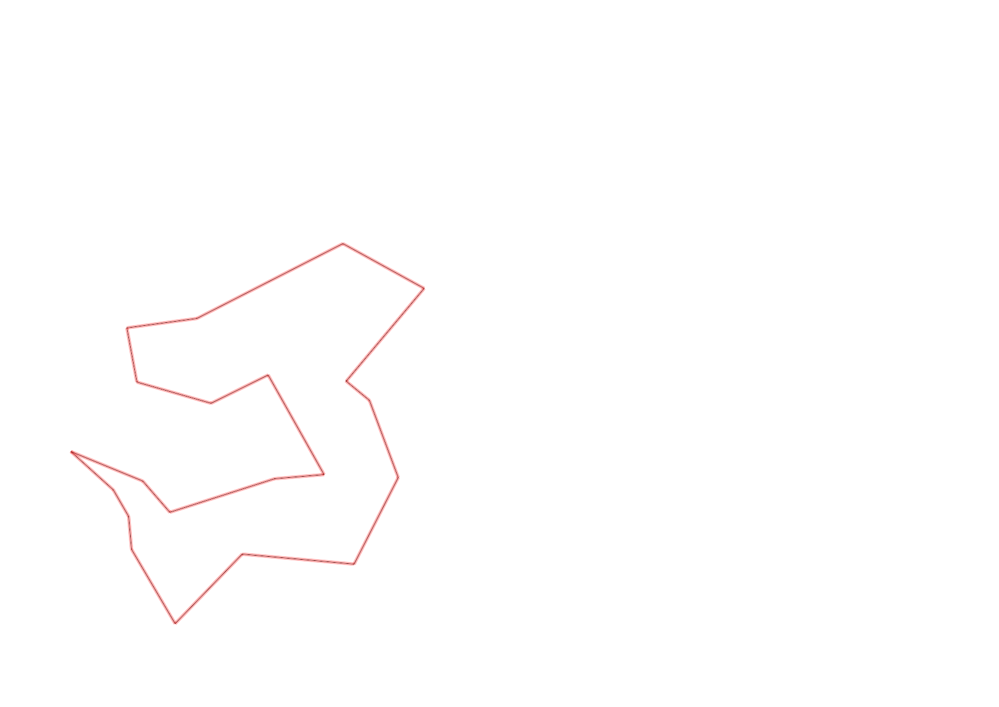
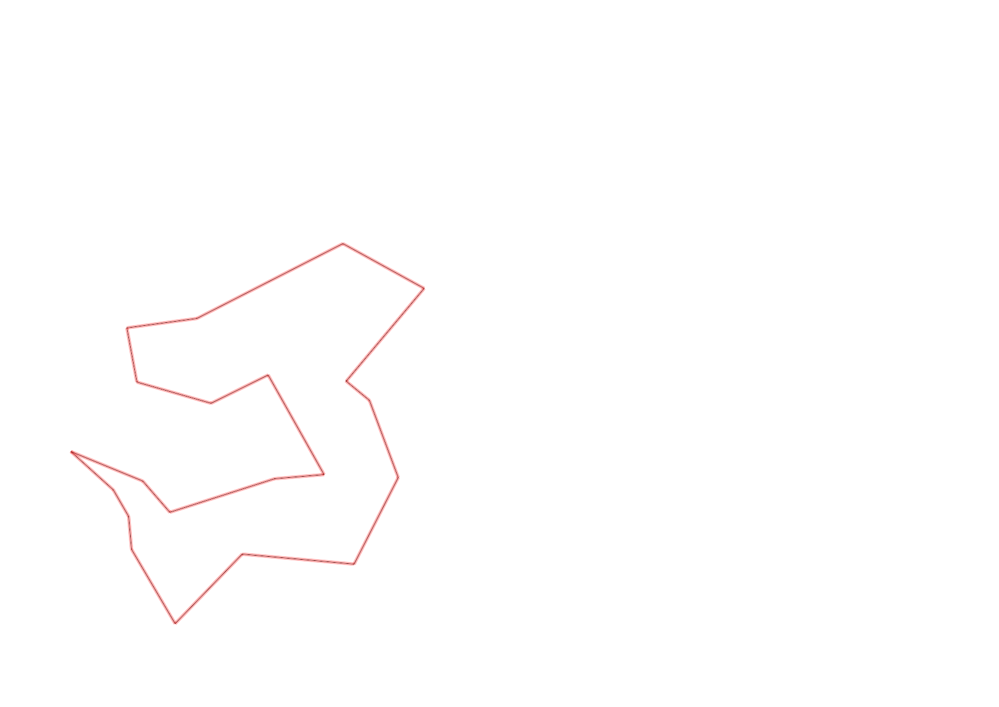

| Control |
Points |
Time Punched |
Distance |
Your Time |
Pace |
Place |
Fastest Time |
Median Time |
% Behind Fastest |
| 127 |
20 |
|
0.06 |
0:00:24 |
06:40 |
13 / 30 |
0:00:01 |
0:00:32 |
2300% |
| 42 |
40 |
|
0.17 |
0:01:58 |
11:34 |
12 / 20 |
0:01:06 |
0:01:52 |
78% |
| 61 |
60 |
|
0.21 |
0:03:59 |
18:58 |
16 / 20 |
0:02:20 |
0:03:34 |
70% |
| 59 |
50 |
|
0.24 |
0:02:29 |
10:20 |
9 / 19 |
0:01:47 |
0:02:30 |
39% |
| 77 |
70 |
|
0.21 |
0:02:22 |
11:16 |
6 / 17 |
0:01:25 |
0:02:33 |
67% |
| 40 |
40 |
|
0.18 |
0:02:40 |
14:48 |
11 / 18 |
0:01:16 |
0:02:38 |
110% |
| 71 |
70 |
|
0.07 |
0:00:55 |
13:05 |
6 / 12 |
0:00:34 |
0:01:00 |
61% |
| 69 |
60 |
|
0.06 |
0:01:13 |
20:16 |
1 / 5 |
0:01:13 |
0:01:26 |
0% |
| 53 |
50 |
|
0.12 |
0:01:52 |
15:33 |
14 / 26 |
0:01:16 |
0:01:51 |
47% |
| 54 |
50 |
|
0.16 |
0:02:24 |
15:00 |
1 / 1 |
0:02:24 |
0:02:24 |
0% |
| 41 |
40 |
|
0.09 |
0:01:45 |
19:26 |
9 / 13 |
0:01:01 |
0:01:43 |
72% |
| 60 |
60 |
|
0.23 |
0:03:04 |
13:20 |
3 / 4 |
0:01:55 |
0:02:33 |
60% |
| 38 |
30 |
|
0.11 |
0:04:51 |
44:05 |
15 / 15 |
0:00:00 |
0:01:15 |
-% |
| 126 |
20 |
|
0.24 |
0:02:17 |
09:30 |
2 / 3 |
0:02:16 |
0:02:17 |
0% |
| 130 |
30 |
|
0.14 |
0:00:39 |
04:38 |
13 / 19 |
0:00:00 |
0:00:33 |
-% |
| 44 |
40 |
|
0.16 |
0:01:30 |
09:22 |
1 / 1 |
0:01:30 |
0:01:30 |
0% |
| 32 |
30 |
|
0.12 |
0:02:44 |
22:46 |
20 / 22 |
0:00:43 |
0:01:19 |
281% |
| 63 |
60 |
|
0.15 |
0:01:34 |
10:26 |
14 / 25 |
0:01:05 |
0:01:29 |
44% |
| 107 |
100 |
|
0.35 |
0:04:41 |
13:22 |
17 / 22 |
0:02:14 |
0:03:49 |
109% |
| 57 |
50 |
|
0.2 |
0:07:21 |
36:45 |
22 / 22 |
0:01:54 |
0:03:53 |
286% |
| Finish |
0 |
|
0.26 |
0:06:37 |
25:26 |
2 / 2 |
0:02:34 |
0:04:35 |
157% |
Total Distance Covered: 3.53km
Points Scored: 970
Late Penalty: 0
Final Score: 970
Total Time: 0hours 57minutes 19seconds
Efficiency: 274.79 points/km
 
